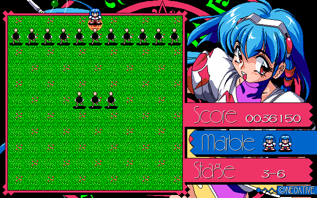
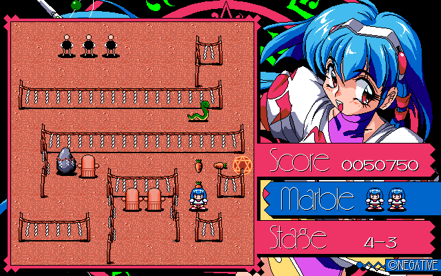

Ｍａｒｂｌｅ Ｃｏｏｋｉｎｇ （ＮＥＧＡＴＩＶＥ）
発売：１９９４年 メディア：ＰＣ９８（ＦＤ２枚組）
最終更新日 2005.10.10
−概要＆感想−
先祖代々から伝わる家宝のロッド。どんな願いでも叶えてくれる「願いの杖」と呼ばれながらおじいちゃんから触ることを禁じられていた。おじいちゃんが留守の間に主人公マーブルがそれを弄ってしまうと、数千年間そのロッドに封じられていた悪魔「ナイトメア」が封印を破って出てきてしまう。逃げ出したナイトメアをマーブルとロッド「シリウス」が追いかける・・・というストーリーの、パックマンと平安京エイリアン（古いな…）を足して２で割ったようなアクションゲーム。
ストーリーモードは７章よりなっており、それぞれ９つの面が用意されている。３面、６面をクリアするとご褒美のエロＣＧが１枚、９面をクリアすると３枚のＣＧが表示される。ＦＤ２枚組の割に多くのＣＧがあり、かなり可愛い＆エロいが、テキストが付かず、ただパラパラと表示されるだけなのでイマイチ物足りない。５−９面の攻略にはとことん悩みました・・・（下記参照）。
−引っかかりそうな面攻略情報−
■３−６面
開始直後、敵が一列で近づいてくるので、自分の周囲に魔法陣を張る（敵は魔法陣を消去できない）。

■４−３面
敵を下記のように誘き出して消去させる。

■５−１面
開始直後、速攻で忍者が近づいてくるので、自分の周囲に魔法陣を張り、忍者の接近を跳ね返す。忍者の行動方向が反対になったら逃げて安全な位置に移動する。
■５−９面
この面はかなりトリッキー。右上の松で囲まれた４×４の空間に忍者２人がくるくる回っている。この４×４のマスの中にニンジンを置くことは不可能。ここで使うのは左下で回遊している忍者である。この左下の忍者を５−１面で使ったように回遊しているルートを邪魔するように置いて、右上に追い込んでやると、２人の忍者の行動パターンが変化し、マスから出てくるようになる。そうすれば広いフィールドで消去可能となる。
■６−１面
初期位置のそばに袋小路があるので、その空間を使って消去する。
■６−８面
これも５−９面と同じで、左下のキャラを右上のマス方向に追い込んで行動パターンを変化させる。一回では右上に追い込めないので、周回ルートが右上に変化したらもう一度魔法陣を置いてさらに右上に追い込む。
■６−９面
まず、右下で魔法陣を展開すると、真ん中にいる敵が右のほうに移動して中央にスペースが空く。このスペースを利用して真ん中の敵を消去する。あとは右下→右上→左上の順序で消去すれば良い。
（参考文献）
・なし
リストへ戻る